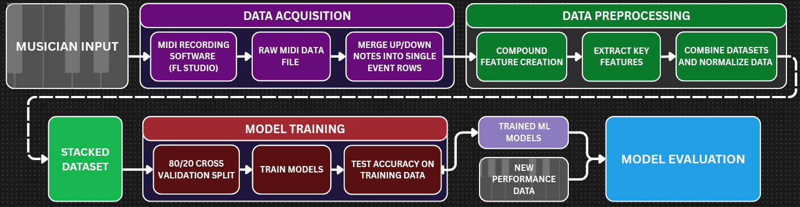
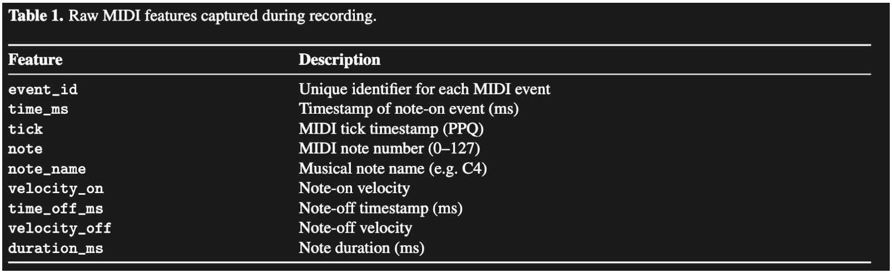
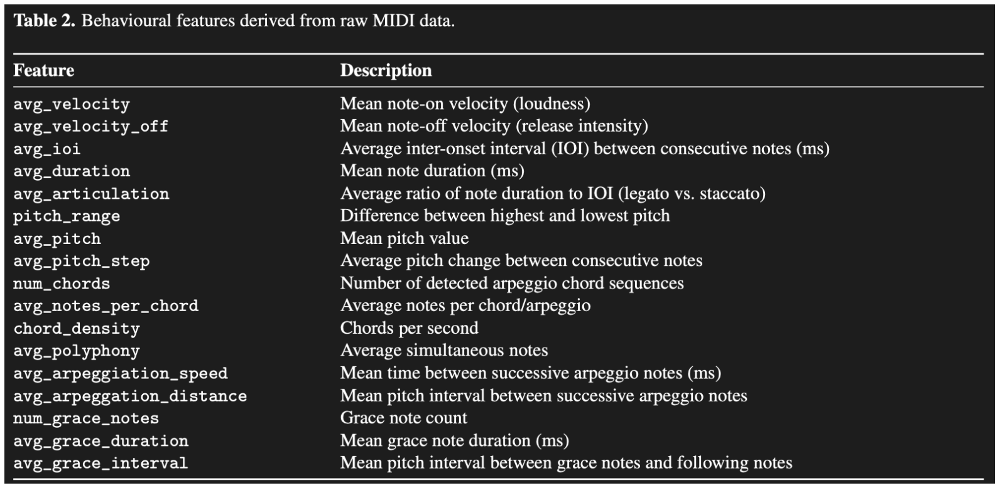
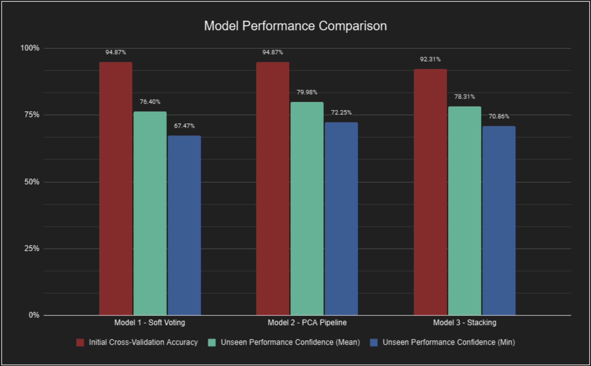

Overview
For a behavioural biometrics course, my team and I were asked to build an authentication system that recognises people by how they act rather than what they know or their physical attributes. We chose music, and wanted to find out whether performance data like timing, touch, and pitch movement, can carry a distinct signature strong enough to identify a player, even if they are improvising over a jazz standard instead of playing a set piece of music.
We focused our attention on MIDI keyboards, as they records when each note starts and ends, how hard it’s struck (in keyboards with "aftertouch" technologies), and how the hands travel between keys. For our project, we cut MIDI recordings into 30-second windows, turned the raw MIDI data into engineered features, and then used these features to train machine learning models that predict which performer is currently playing. Per-window predictions are averaged to name the performer of a full recording, with a score representing the model's confidence in its decision.
Three approaches were compared: a voting ensemble, a scaling + PCA + logistic regression pipeline, and a stacked model where random forest and KNN feed a logistic regression.
The test that mattered used complete performances the models had never seen. All three identified the correct player in all 7 recordings, including sessions where the player deliberately changed their style, which suggests the system is picking up deeper motor habits rather than surface-level style.
System pipeline

Raw and extracted features
Each recording captures raw MIDI events: note timing, pitch and on/off velocity. These are then condensed into per-performance behavioural features covering loudness, timing, articulation, pitch movement, chords and arpeggios, and grace notes.


Model comparison
Three ensembles were compared: soft voting, a PCA pipeline and stacking. Cross-validation accuracy was 92-95% for all three, and performance on unseen recordings was lower, with the PCA pipeline holding up best.

What the models learned
Features cover rhythm and timing (inter-onset intervals, articulation), dynamics (velocity trends), pitch movement and range, chord density, and arpeggio and grace-note structure. The chart shows which of them mattered most for telling players apart.
Limitations and next steps
The dataset covers 5 participants, which limits how far the results generalize. Future work includes pedal and micro-timing features, sequence models such as RNNs or transformers, and live authentication during a performance.
Skills and technologies
Source code, wiring diagrams, 3D models and full documentation are in the GitHub repository.